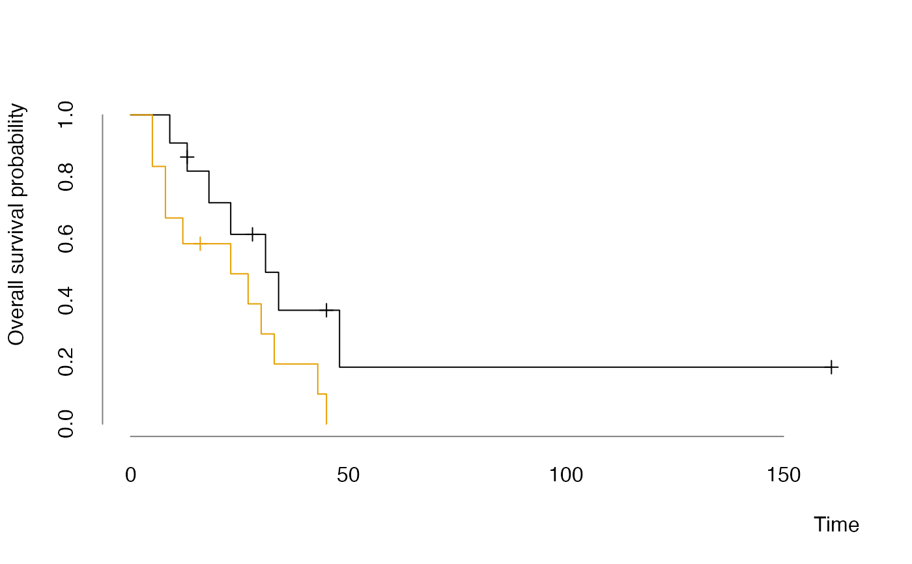

This is just a wrapper method around survival::plot.survfit() with
custom defaults.
plot_surv( x, main = character(), xlab = "Time", ylab = "Overall survival probability", mark.time = TRUE, conf.int = FALSE, col = palette.colors(max(1L, length(x$strata))), times, ... )
| x |
|
|---|---|
| main |
|
| xlab |
|
| ylab |
|
| mark.time |
|
| conf.int |
|
| col |
|
| times |
|
| ... | further arguments passed to |
a list with x and y containing the coordinates of the last point
of each curves.
